<!--
  All of the below icons are from fontawesome.com unless otherwise specified.
  License: https://fontawesome.com/license
  After downloading from fontawesome.com/icons none of the icons were changed.
-->
<div class="over">
	<div class="icon" [class.button]="isButton" [class.spin]="shouldSpin" [style.width]=" iconSize + 'px' "
		[style.height]=" iconSize + 'px' ">

		<!-- menu -->
		<svg *ngIf=" iconName == 'menu' " xmlns="http://www.w3.org/2000/svg" viewBox="0 0 448 512">
			<path fill="currentColor"
				d="M16 132h416c8.837 0 16-7.163 16-16V76c0-8.837-7.163-16-16-16H16C7.163 60 0 67.163 0 76v40c0 8.837 7.163 16 16 16zm0 160h416c8.837 0 16-7.163 16-16v-40c0-8.837-7.163-16-16-16H16c-8.837 0-16 7.163-16 16v40c0 8.837 7.163 16 16 16zm0 160h416c8.837 0 16-7.163 16-16v-40c0-8.837-7.163-16-16-16H16c-8.837 0-16 7.163-16 16v40c0 8.837 7.163 16 16 16z">
			</path>
		</svg>

		<!-- circle-notch -->
		<svg *ngIf=" iconName == 'circle-notch' " xmlns="http://www.w3.org/2000/svg" viewBox="0 0 448 512">
			<path fill="currentColor"
				d="M288 39.056v16.659c0 10.804 7.281 20.159 17.686 23.066C383.204 100.434 440 171.518 440 256c0 101.689-82.295 184-184 184-101.689 0-184-82.295-184-184 0-84.47 56.786-155.564 134.312-177.219C216.719 75.874 224 66.517 224 55.712V39.064c0-15.709-14.834-27.153-30.046-23.234C86.603 43.482 7.394 141.206 8.003 257.332c.72 137.052 111.477 246.956 248.531 246.667C393.255 503.711 504 392.788 504 256c0-115.633-79.14-212.779-186.211-240.236C302.678 11.889 288 23.456 288 39.056z">
			</path>
		</svg>

		<!-- eye-slash -->
		<svg *ngIf=" iconName == 'eye-slash' " xmlns="http://www.w3.org/2000/svg" viewBox="0 0 640 512">
			<path fill="currentColor"
				d="M634 471L36 3.51A16 16 0 0 0 13.51 6l-10 12.49A16 16 0 0 0 6 41l598 467.49a16 16 0 0 0 22.49-2.49l10-12.49A16 16 0 0 0 634 471zM296.79 146.47l134.79 105.38C429.36 191.91 380.48 144 320 144a112.26 112.26 0 0 0-23.21 2.47zm46.42 219.07L208.42 260.16C210.65 320.09 259.53 368 320 368a113 113 0 0 0 23.21-2.46zM320 112c98.65 0 189.09 55 237.93 144a285.53 285.53 0 0 1-44 60.2l37.74 29.5a333.7 333.7 0 0 0 52.9-75.11 32.35 32.35 0 0 0 0-29.19C550.29 135.59 442.93 64 320 64c-36.7 0-71.71 7-104.63 18.81l46.41 36.29c18.94-4.3 38.34-7.1 58.22-7.1zm0 288c-98.65 0-189.08-55-237.93-144a285.47 285.47 0 0 1 44.05-60.19l-37.74-29.5a333.6 333.6 0 0 0-52.89 75.1 32.35 32.35 0 0 0 0 29.19C89.72 376.41 197.08 448 320 448c36.7 0 71.71-7.05 104.63-18.81l-46.41-36.28C359.28 397.2 339.89 400 320 400z" />
		</svg>

		<!-- eye -->
		<svg *ngIf=" iconName == 'eye' " xmlns="http://www.w3.org/2000/svg" viewBox="0 0 576 512">
			<path fill="currentColor"
				d="M288 144a110.94 110.94 0 0 0-31.24 5 55.4 55.4 0 0 1 7.24 27 56 56 0 0 1-56 56 55.4 55.4 0 0 1-27-7.24A111.71 111.71 0 1 0 288 144zm284.52 97.4C518.29 135.59 410.93 64 288 64S57.68 135.64 3.48 241.41a32.35 32.35 0 0 0 0 29.19C57.71 376.41 165.07 448 288 448s230.32-71.64 284.52-177.41a32.35 32.35 0 0 0 0-29.19zM288 400c-98.65 0-189.09-55-237.93-144C98.91 167 189.34 112 288 112s189.09 55 237.93 144C477.1 345 386.66 400 288 400z" />
		</svg>

		<!-- cog -->
		<svg *ngIf=" iconName == 'settings' " xmlns="http://www.w3.org/2000/svg" viewBox="0 0 512 512">
			<path fill="currentColor"
				d="M487.4 315.7l-42.6-24.6c4.3-23.2 4.3-47 0-70.2l42.6-24.6c4.9-2.8 7.1-8.6 5.5-14-11.1-35.6-30-67.8-54.7-94.6-3.8-4.1-10-5.1-14.8-2.3L380.8 110c-17.9-15.4-38.5-27.3-60.8-35.1V25.8c0-5.6-3.9-10.5-9.4-11.7-36.7-8.2-74.3-7.8-109.2 0-5.5 1.2-9.4 6.1-9.4 11.7V75c-22.2 7.9-42.8 19.8-60.8 35.1L88.7 85.5c-4.9-2.8-11-1.9-14.8 2.3-24.7 26.7-43.6 58.9-54.7 94.6-1.7 5.4.6 11.2 5.5 14L67.3 221c-4.3 23.2-4.3 47 0 70.2l-42.6 24.6c-4.9 2.8-7.1 8.6-5.5 14 11.1 35.6 30 67.8 54.7 94.6 3.8 4.1 10 5.1 14.8 2.3l42.6-24.6c17.9 15.4 38.5 27.3 60.8 35.1v49.2c0 5.6 3.9 10.5 9.4 11.7 36.7 8.2 74.3 7.8 109.2 0 5.5-1.2 9.4-6.1 9.4-11.7v-49.2c22.2-7.9 42.8-19.8 60.8-35.1l42.6 24.6c4.9 2.8 11 1.9 14.8-2.3 24.7-26.7 43.6-58.9 54.7-94.6 1.5-5.5-.7-11.3-5.6-14.1zM256 336c-44.1 0-80-35.9-80-80s35.9-80 80-80 80 35.9 80 80-35.9 80-80 80z" />
		</svg>

		<!-- This icon is not from fontawesome.com -->
		

		<!-- circle-times -->
		<svg *ngIf=" iconName == 'circle-times' " xmlns="http://www.w3.org/2000/svg" viewBox="0 0 512 512">
			<path fill="currentColor"
				d="M256 8C119 8 8 119 8 256s111 248 248 248 248-111 248-248S393 8 256 8zm0 448c-110.5 0-200-89.5-200-200S145.5 56 256 56s200 89.5 200 200-89.5 200-200 200zm101.8-262.2L295.6 256l62.2 62.2c4.7 4.7 4.7 12.3 0 17l-22.6 22.6c-4.7 4.7-12.3 4.7-17 0L256 295.6l-62.2 62.2c-4.7 4.7-12.3 4.7-17 0l-22.6-22.6c-4.7-4.7-4.7-12.3 0-17l62.2-62.2-62.2-62.2c-4.7-4.7-4.7-12.3 0-17l22.6-22.6c4.7-4.7 12.3-4.7 17 0l62.2 62.2 62.2-62.2c4.7-4.7 12.3-4.7 17 0l22.6 22.6c4.7 4.7 4.7 12.3 0 17z" />
		</svg>

		<!-- search -->
		<svg *ngIf=" iconName == 'search' " xmlns="http://www.w3.org/2000/svg" viewBox="0 0 512 512">
			<path fill="currentColor"
				d="M505 442.7L405.3 343c-4.5-4.5-10.6-7-17-7H372c27.6-35.3 44-79.7 44-128C416 93.1 322.9 0 208 0S0 93.1 0 208s93.1 208 208 208c48.3 0 92.7-16.4 128-44v16.3c0 6.4 2.5 12.5 7 17l99.7 99.7c9.4 9.4 24.6 9.4 33.9 0l28.3-28.3c9.4-9.4 9.4-24.6.1-34zM208 336c-70.7 0-128-57.2-128-128 0-70.7 57.2-128 128-128 70.7 0 128 57.2 128 128 0 70.7-57.2 128-128 128z" />
		</svg>

	</div>
</div>